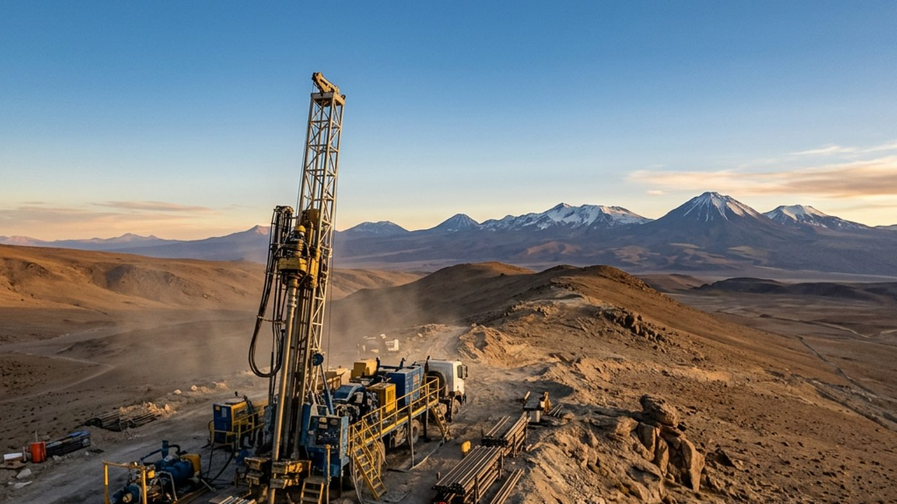

02 — Location & Logistics
Location & Logistics
AMAYA sits in the Atacama Desert, Región de Antofagasta, 80 km north of Calama — a region served by regional air access and by Chile’s principal copper export ports.
Access
Established mining district, established logistics.
AMAYA Project
AtacamaAtacama Desert, Región de Antofagasta, Chile — 3,800 m above sea level, 80 km north of Calama.
Calama Airport (CJC)
Approx. 85 kmEl Loa International Airport, Calama — regional air access. Approx. 85 km straight-line; approx. 100 km by road via Ruta 21 / Ruta 24.
Export port — Antofagasta
Approx. 260 kmPort of Antofagasta — the region’s principal copper export port serving the Calama mining district. Approx. 260 km straight-line; approx. 315 km by road via Ruta 25 / Ruta 5.
Distances are measured from the project’s stated position (Atacama Desert, 80 km north of Calama, Región de Antofagasta). Straight-line figures are great-circle distances calculated from that position; road figures are approximate and follow the Calama–Antofagasta corridor (Ruta 25, 119.3 km of highway between Calama and the Ruta 5 junction at Carmen Alto, plus Ruta 5 to Antofagasta). Puerto Angamos at Mejillones — 65 km north of Antofagasta and the region’s principal bulk and concentrate terminal — is an alternative export outlet at approx. 215 km straight-line. Figures verified 4 September 2026. Sources: Ruta 25 (Chile), Wikipedia; Puerto Angamos, location page. Distances are indicative pending confirmation of surveyed concession coordinates.

High desert, established corridorRoad, air and port access through an operating mining district.
Illustrative — not the AMAYA site
Neighbours
Surrounded by established operations.
The project sits within an established mining district, with two producing operations within a short radius to the southeast.
Minera El Abra
Operated by Freeport-McMoRan — one of the district’s established copper operations.
15 km southeast
Chonchi Mine
A further nearby operation reinforcing the prospectivity of the surrounding ground.
22 km southeast
Calama
Regional mining hub providing logistics, workforce and infrastructure access.
80 km south